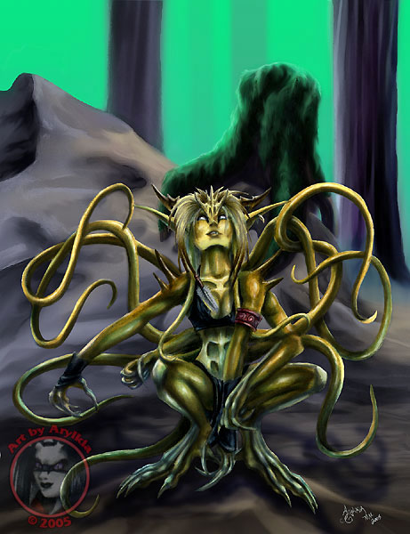

| Climate/Terrain | Mari, Laghi e Grandi Fiumi |
| Frequency | Very Rare |
| Organization | Solitary |
| Activity Cycle | Any |
| Diet | Carnivoro |
| Intelligence | Exceptionally intelligent (15 - 16) |
| Treasure | Speciale |
| Alignment | Neutral Evil |
| No. Appearing | 1 |
| Armor Class | 4 |
| Movement | 12, Sw. 12 |
| Hit Dice | 5 + 2 |
| Thac0 | 16 |
| No. of Attacks | 3 tentacoli |
| Damage / Attacks | 1d4 / 1d4 / 1d4 |
| Special Attacks | Vedi Sotto |
| Special Defenses | Vedi Sotto |
| Magic Resistance | 15 % |
| Size | Medium |
| Morale | Champion (16) |
| XP value | 1000 |
Descrizione
La succube delle acque, anche denominata la strega dai tentacoli dorati, è un'umanoide di medie dimensione la cui altezza raggiunge quasi i due metri, dotata di grosse zampe palmate che le permettono di muoversi in acqua come se fosse sulla terra ferma. Dalla schiena le spuntano 5-6 tentacoli estremamente robusti che possono raggiungere anche i 3 metri di lunghezza.
Combat
Questa perfida creatura non ha timore di combattere in corpo a corpo, anzi a volte è eccitata dal combattimento. Utilizza i suoi tentacoli per attaccare le vittime con potenti frustate, nonostante possa muovere i tentacoli con estrema destrezza non può attaccare con più di tre di questi simultaneamente. Può però distribuire a piacimento e senza penalità i suoi attacchi fra gli avversari che si trovino in melee anche diversificandoli fra i vari nemici.
La succube delle acque è dotata di un potere rigenerativo impressionante le ferite si vedono guarire sotto i suoi occhi, potendo rigenerare 1 punto ferita al round.
Data il suo legame con l'acqua la succube delle acque risulta totalmente immune a tutte le magie che si basano sull'acqua (comprese quelle di evocation water) e subisce, inoltre, 1/2 dei danni da freddo.
La succube è dotata di un attacco speciale che può usare una volta al giorno nei confronti di un avversario che si trova in melee. In pratica la succube vomita sul viso dell'avversario una sostanza nera ed acida che secerne nel proprio stomaco. La vittima deve superare un tiro salvezza contro paralisi a -1 modificato dal reaction adjustment della destrezza. Se fallisce sarà colpita in pieno viso dalla sostanza vischiosa e risulterà accecata totalmente e sentirà un forte bruciore. Dal round successivo potrà decidere di levarsi di dosso la sostanza, azione che richiede un round e le mani libere. In ogni caso resterà accecata per i 2d4 rounds successivi alla rimozione della sostanza. Per ogni round in cui la vittima mantiene sul viso la sostanza, inoltre, vi è una percentuale del 5% che l'acido bruci i suoi bulbi oculari (fino ad una possibilità massima del 25%). Se ciò si verifica la vittima diventerà definitivamente cieca. La vista sarà recuperata solo a seguito di una rigenerazione o altro incantesimo ritenuto valido.
Habitat/Society
La succube delle acque è un essere solitario, proveniente dalle profondità dei laghi o dei mari. A volte si insedia lungo le coste nelle grotte naturali formate dagli scogli. Si nutre di carne e adora mangiare creature terrestri essendo spesso stufa del pesce che mangia solitamente. Se viene a contatto con umanoidi più deboli, di solito, li schiavizza o si crea una posizione di rispetto in quelle comunità. E' un essere estremamente malvagio ed intelligente.
Nonostante possa muoversi fuori dall'acqua senza problemi e possa respirare normalmente sia in acqua che fuori la sua pelle si disidrata rapidamente nell'arco di 24 ore. Per questo motivo non lascia mai le zone costiere per avventurarsi nella terra ferma.
Ecology
La succube dell'acque è una creatura legata lontanamente ai demoni dei piani dimensionali. In ogni caso, nonostante questo lontano legame, non può qualificarsi come appartenente alla famiglia dei demoni. Si dice che la sua origine sia legata ad un incrocio fra un demone di Azatar ed un minore dalla forma di piovra del dio Eram. In particolare si narra che Azatar abbia donato al dio dei mari un feto demoniaca di una succube per ricompensarlo della sua posizione di neutralità nel panteon divino. Eram avrebbe quindi inviato una sua creatura tentacolare per fecondare il feto e creare questa creatura al fine di utilizzarla come emissario o come serva per i suoi adoratori. La succube ha però conservato la sua natura malvagia ed opportunista, per questo motivo a volte sfugge dal controllo dei suoi padroni e risalendo in superficie gode della sua libertà conducendo una vita solitaria.
La succube delle acque adora le perle bianche (100 g.p.) ed è solita collezionarle nella propria dimora all'interno di grosse conchiglie. Nella sua tana vi è il 75% di ritrovarne 2d4. Inoltre vi è il 25% che la succube possegga un oggetto magico (non pozioni o pergamena) che usa come materiale di scambio con gli umanoidi presenti nella zona.
Mystical Resource Sourge
(Cuore) Quantità: 1, Presenza 33% - Effetto Particolare:
Rigenerazione
- Qualità della Risorsa:
Common.
Mystical Resource Sourge
(Pelle) Quantità: 1, Presenza 33% - Effetto Particolare:
Resistenza al Freddo
- Qualità della Risorsa:
Common.
Mystical Resource Sourge
(Stomaco) Quantità: 1, Presenza 33% - Effetto Particolare:
Acido
- Qualità della Risorsa:
Common.